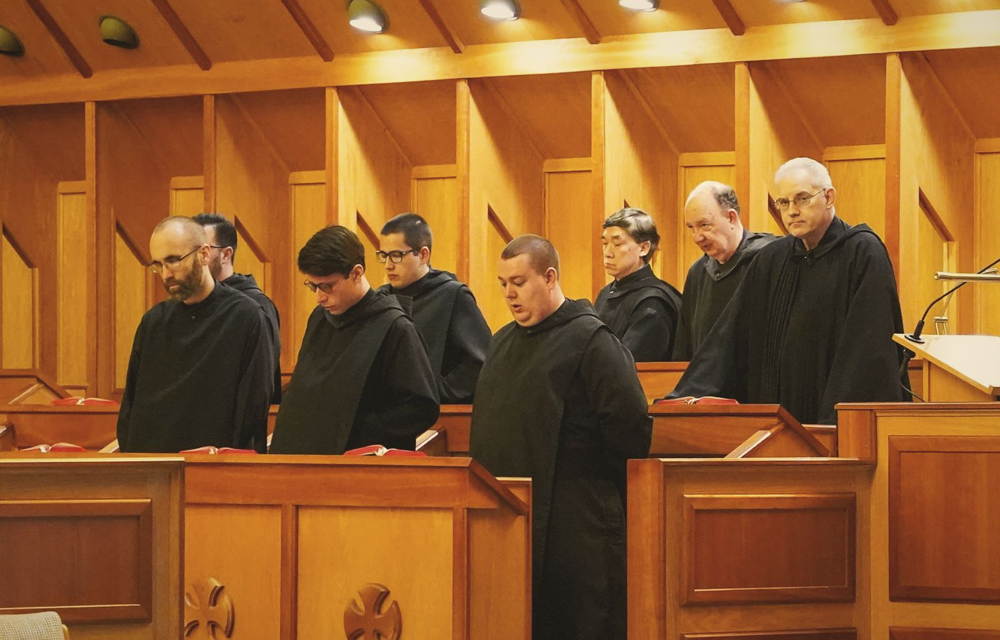
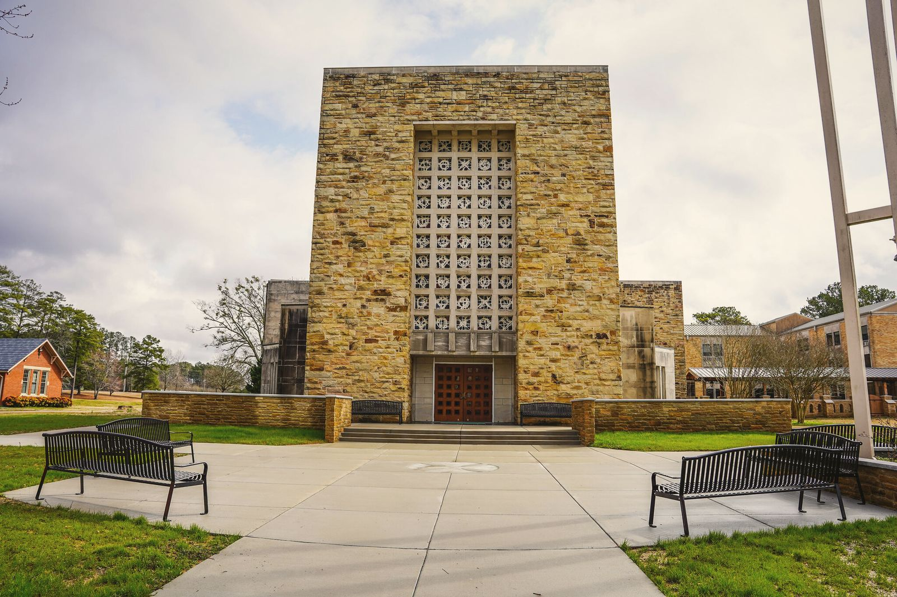
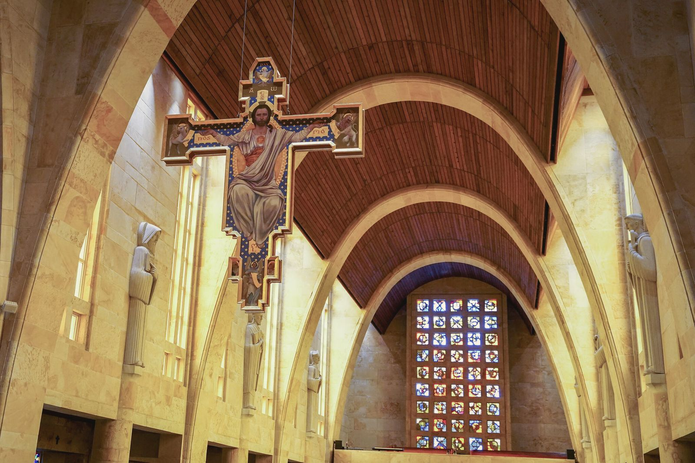
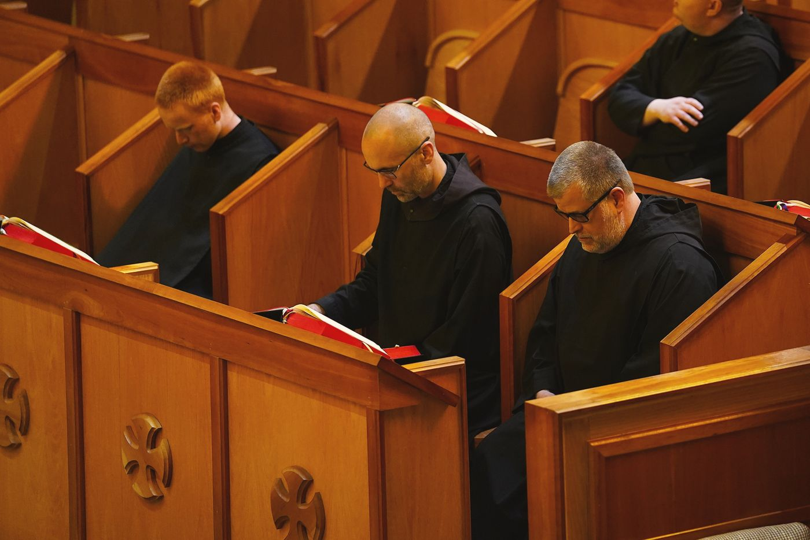

Pray with Us
The church is open.
Come and pray.
Five times a day the bell calls the monks to choir. Anyone may come and pray with them.
“Let nothing be preferred to the Work of God.” So St. Benedict wrote in his Rule (chapter 43), and so the day at St. Bernard is built around the Divine Office, the psalms sung in common, and the Mass. Guests are welcome at all of it. Come as you are, sit in the nave, and pray as much or as little as you like: listen, follow along, or simply rest in the quiet.
The schedule
When the monks pray
In the Abbey Church, Central time.
Monday to Friday
| Matins & Lauds | 6:00 a.m. |
|---|---|
| Sext | 11:55 a.m. |
| Mass | 5:00 p.m. |
| Vespers | 5:30 p.m. |
| Compline | 7:15 p.m.* |
* Compline is not public on Wednesdays.
Saturday
| Matins & Lauds | 6:00 a.m. |
|---|---|
| Sext | 10:45 a.m. |
| Mass | 11:00 a.m. |
| Vespers | 5:30 p.m. |
| Compline | 7:15 p.m. |
Sunday
| Matins & Lauds | 7:00 a.m. |
|---|---|
| Sext | 10:00 a.m. |
| Mass | 10:30 a.m. |
| Solemn Vespers | 5:30 p.m. |
| Compline | not public |
The schedule can change, especially on major feasts and school occasions. If you are coming from far away, call the monastery first: 256-734-8291.
The Abbey Church
Plain stone outside, soaring arches within
From the lawn the Abbey Church is a plain, square block of golden sandstone, its face a stone lattice, with an open bell tower standing apart. Step inside and tall pointed arches of the same stone rise one after another down the nave, and between them the saints, carved larger than life, keep watch over the choir.
The stone is our own: the church is built of native sandstone quarried on the monastery grounds. It was finished in 1964, the crown of Abbot Bede Luibel's building campaign. His death notice remembers “the single-mindedness with which he was determined that St. Bernard have a proper abbey church,” and adds, “it is impossible to capture the full flavor of the struggle that entailed.”
The statues were carved by Herbert Jogerst, a German sculptor who had come to America as a prisoner of war and later carved for St. Meinrad Archabbey in Indiana. A young monk, Br. Jude Johnston, was his apprentice and went on to a life as an artist.


The Great Cross
Over the altar hangs a painted crucifix, a “hanging rood”, by the Kentucky liturgical artist Gloria Thomas: solid wood, outlined in gold, with “a strong sense of medieval spirit”. It weighs nearly four hundred pounds and hangs from the vault on aircraft cable, raised and lowered by two men at winches in the attic. In 2024, after more than twenty years over the altar, it was taken down, cleaned of mould and varnished by Gary Chapman, a painter and professor at UAB, and raised again.
Saints in the stone
Look for St. Benedict, holding his Rule open at its first words: Ausculta, o fili, “Listen, my son.” The church also keeps the abbey's relics of more than a hundred saints.
See the relicsSources: Alabama Department of Archives and History; the abbey Necrology; the Cullman Tribune (2023, 2025); CNHI (2024). Photos: Anne Stephens.
The Divine Office
The psalms, sung through the day
The Office is made mostly of the 150 psalms, the prayers Our Lord himself prayed. Every human feeling is in them: joy and grief, fear and anger, praise, thanks and sorrow for sin. The monks sing them on behalf of themselves and of the whole world, and the short readings, often the same from day to day, sink in until they are known by heart.
Matins and Lauds open the day while it is still dark; Vespers closes it as the light fades. They are the two “hinges” of the day. Sext stops the work at noon, and Compline commends the night to God.

The hours
What happens at each
Matins
After the night's “Grand Silence”, the first words of the day: “O Lord, open my lips, and my mouth shall proclaim your praise.” Psalms, then two longer readings, one from Scripture and one from the Fathers of the Church, each followed by silence.
Lauds
Morning praise as the sun comes up, every sunrise a little Easter. It rises to the Benedictus, the song of Zechariah, and ends with the Our Father, given out by the abbot.
Sext
At midday the monks leave their work and go to church. The hour recalls the time when Our Lord was put on the cross, at the height of the day's heat and work.
Mass
The heart of the day. Christ's own sacrifice, offered for the Church and for the world, and for the intentions people send us.
Vespers
Evening praise and thanks for the day, rising to the Magnificat, Mary's song. On Sundays it is sung solemnly.
Compline
St. Benedict's own night prayer: an examination of conscience, a few quiet psalms and the hymn to Our Lady. Afterward the abbot blesses each monk with holy water, and silence falls until morning.
Lectio divina
Pray with Scripture as the monks do
Between Lauds and breakfast most of the monks spend their time in lectio divina, “divine reading”: slow, prayerful reading of Scripture. You can do it anywhere. Take a short passage, perhaps next Sunday's Gospel or a few verses of a psalm, find a quiet place, and go through four steps:
Read the passage slowly, more than once, until a word or a phrase stands out. Ponder it: what is it saying to you, today? Pray: speak to God about it, plainly, in your own words. Rest: be still in his presence, without needing to say anything more.
Let us pray for you
Send us your intentions
The monks pray every day for the people who ask for their prayers. You can ask one of our priests to offer Mass for someone living or dead. There is a customary offering, but it is never required.